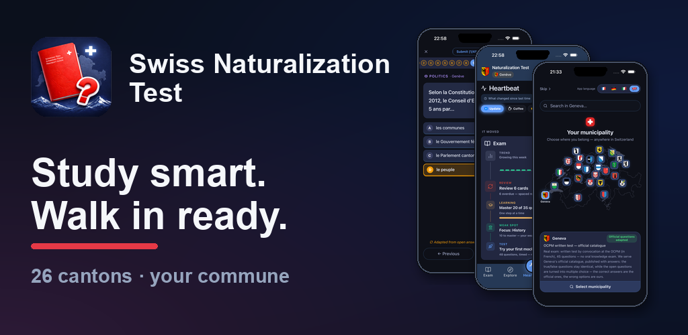
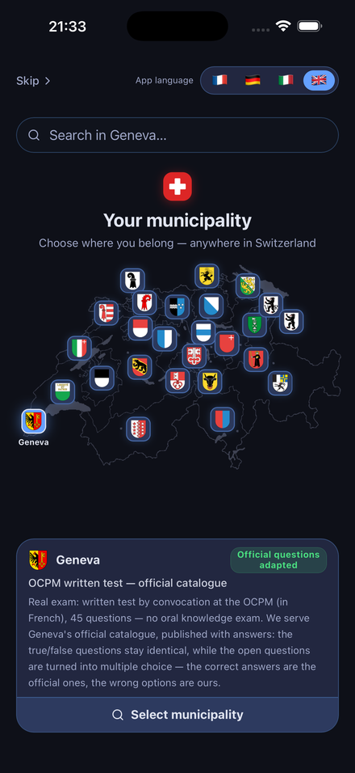
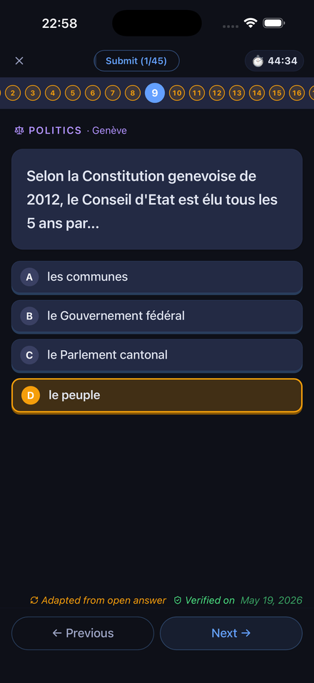
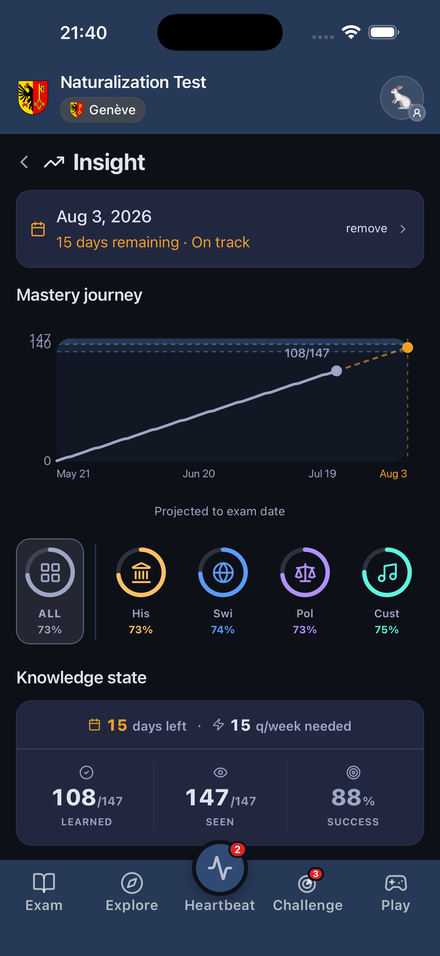
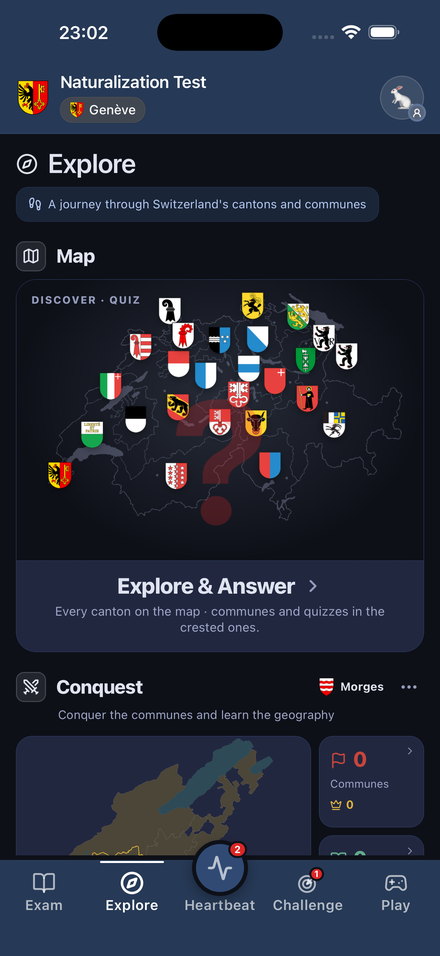
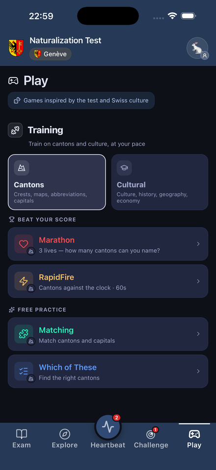

Swiss Naturalization Test
The free, comprehensive way to prepare for Swiss naturalization.


Why this app
🆓
100% Free · No Ads
No paywalls, no banners, ever.
🙅
No Account Required
Just open it and start. No sign-up.
🔒
No Personal Data Collected
Anonymous and privacy-first.
🇨🇭
26 Cantons · Your Commune
Choose your commune anywhere in Switzerland; dedicated exam prep in 11 (~83% of naturalizations).
📚
Honest, Per-Canton
Real official questions where they exist; official federal basics elsewhere.
🌍
4 Languages
FR · DE · IT · EN.
See it in action






NEW
🏰 Conquer Vaud
Claim the canton of Vaud commune by commune: break through the district gates, win the timed assaults, and become Mayor. A playful new way to master local knowledge — district by district. Available in Vaud and its neighbouring cantons (Bern, Fribourg, Geneva, Neuchâtel, Valais).
Featured in
An independent app built by a naturalization candidate — covered by the Swiss press.
Start preparing today